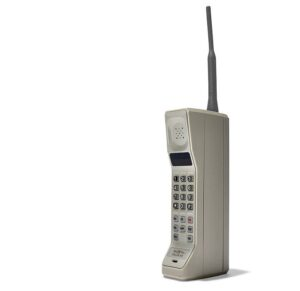
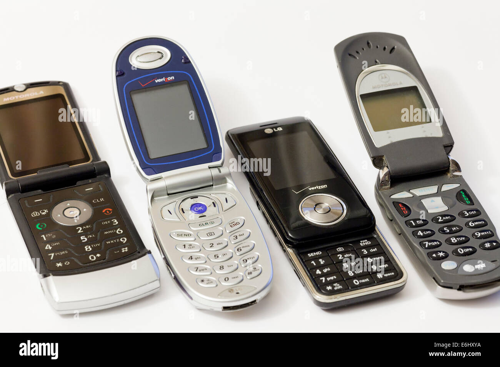
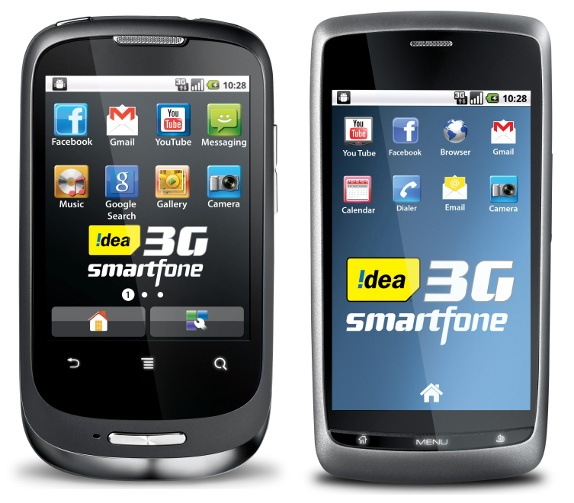
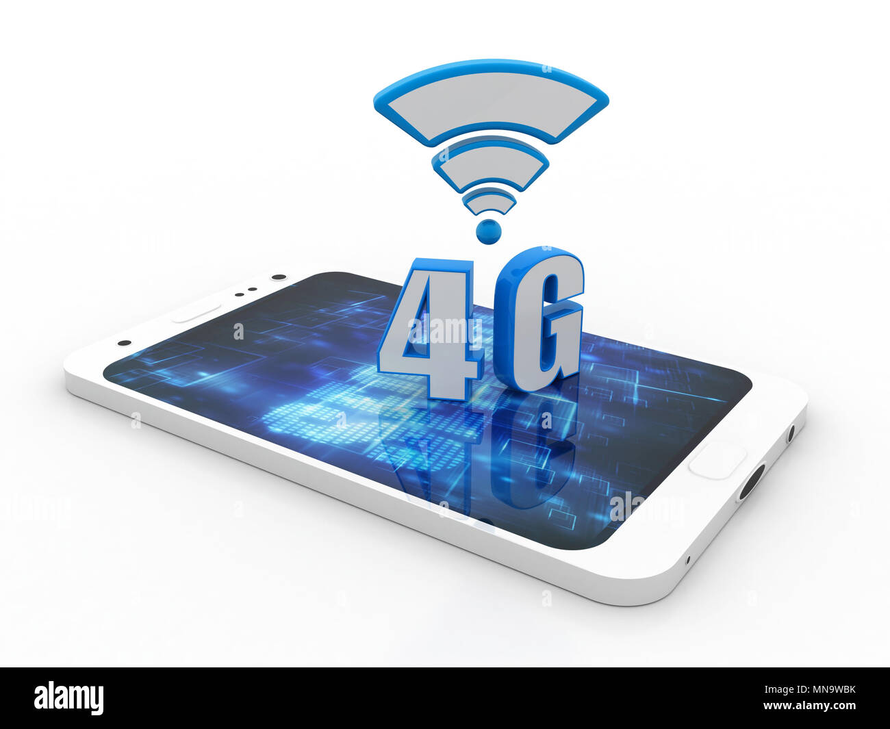
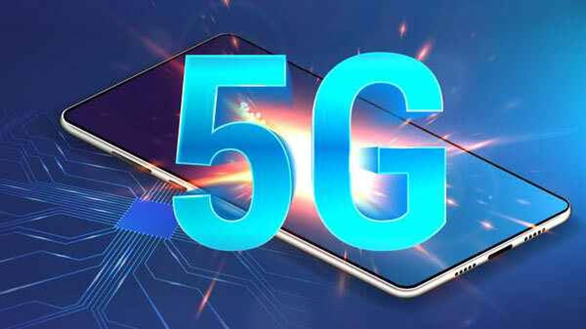
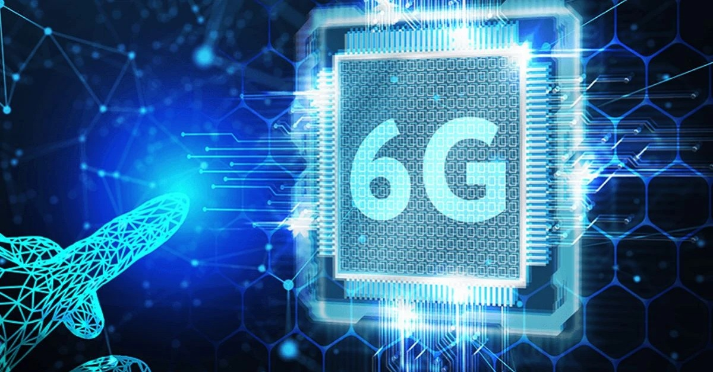

"Evolution of Mobile Networks: Tracing the Journey from 1G to 6G":
Created by :Chandan Shridhar Hegde
Over the course of just over 40 years, the journey from 1G to 6G has revolutionized wireless cellular technology, transforming how we live and communicate. Since the introduction of 1G in 1979, each subsequent generation has brought significant advancements:
- Cell phones have shrunk in size, becoming more portable and user-friendly.
- Download speeds have increased dramatically, allowing for seamless streaming, browsing, and downloading.
- Text messaging emerged as a game-changer, though its popularity has waned with the rise of messaging apps.
- Internet browsing on phones became a daily habit, making information accessible at our fingertips.
- Social media posting has become a constant stream of content, connecting people across the globe.
- The rise of apps has created a digital ecosystem where there's seemingly an app for everything.
- These advancements were made possible by the continuous improvement of telecommunications technology with each generation. Approximately every decade since 1979, a new generation has emerged, significantly changing the way we communicate and enhancing our daily lives.
Let's dive into the timeline from 1G to 6G, exploring what each generation had to offer and the most popular cell phones of their time.Click on the respective images for more information .
1G

2G

3G

4G

5G

6G
